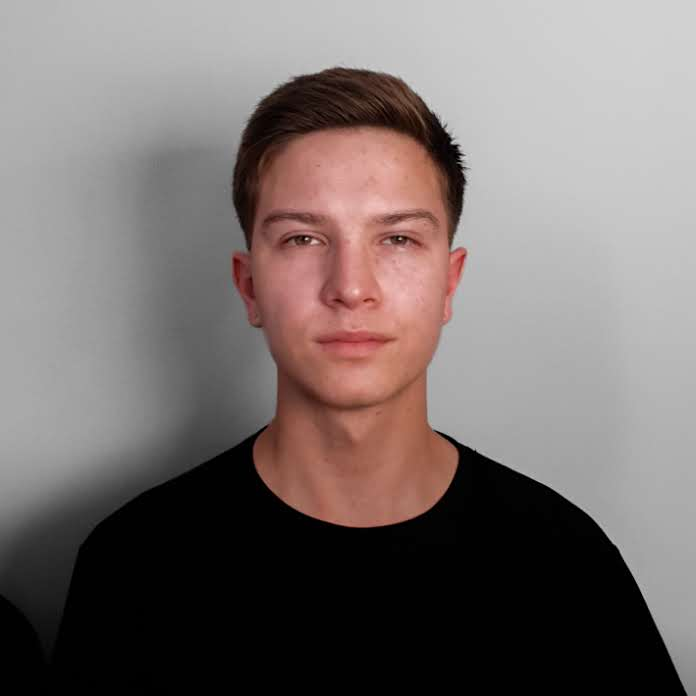

Gabriel Andreiczuk
Cientista de Dados
- Email: gabriel.andreiczuk@ufms.br
- LinkedIn: Gabriel Andreiczuk

Tecnologias
- Python
- C#
- SQL
Experiências
10/2024 - Atual | Griebler Technologies
Estágio
- Desenvolvimento de projetos em ciência de dados.
- Utilização da linguagem Python, e bibliotecas auxiliares como pandas, or-tools e matplotlib.
- Desenvolvimento de DashBoards via Google Looker Studio.